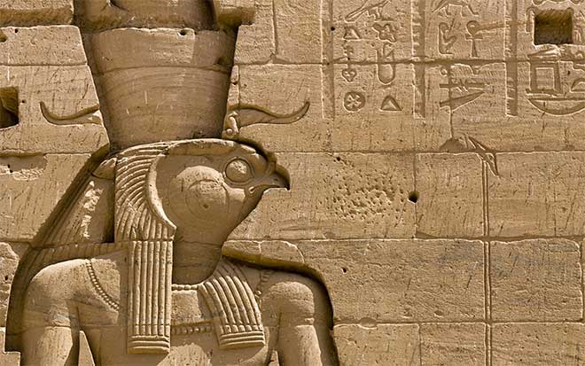
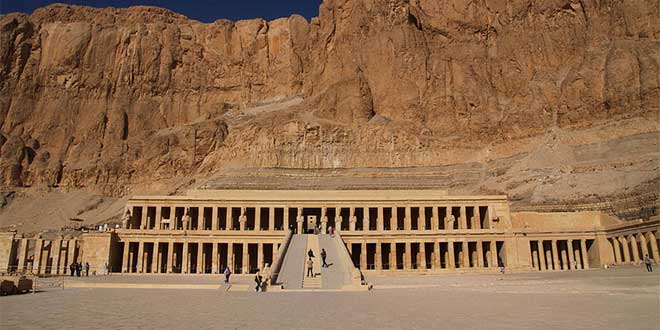
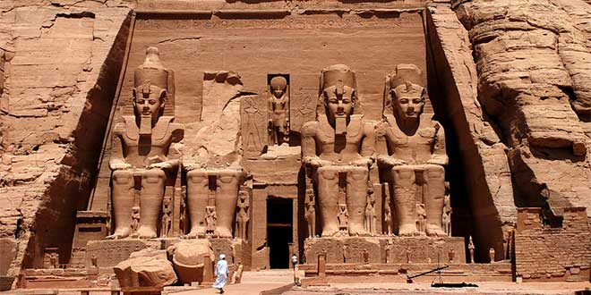
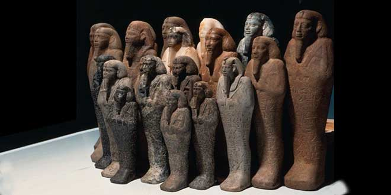
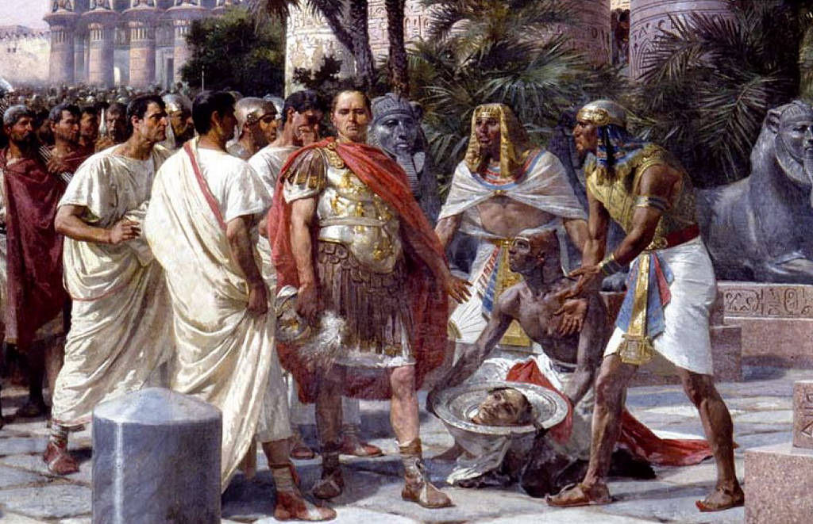

-
Periodo tinita
Periodo fundamental para Egipto ya que es el momento en el que se forma el estado. Comienza la escritura y el calendario
-
Imperio Antiguo
Durante este periodo la capital se encuentra en Memphis (al sur del delta). Las dinastias de mayor esplendor son la IV y V, pero a partir de la VI empieza un momento de decadencia y un momento intermedio

-
Imperio Medio
Durante este periodo la capital se encuentra en Tebas. Época de esplendor en las dinastías XI y XII, pero a partir de ese momento comienza de nuevo un periodo de decadencia en la que hay luchas de poder entre príncipes, etc. que es aprovechado por la dinastia de los hicsos procedentes de Siria, pero son expulsados y comienza el nuevo esplendor
 -
Imperio Nuevo
Se dan cambios significativos. Destacan las dinastías XVIII (marcada por el reinado de Amenofis IV, con el que la capital cambia a Amarna), XIX (marcada por Ramsés) y XX, tras la que vuelve un periodo de crisis
 -
Baja Época
En esta época hay momentos muy interesantes, como el periodo saíta, pero luego comienzan invasiones de otros pueblos.
 -
Periodo Helenístico
Alejandro Magno se hace con el poder, expulsa a los persas y del 330 aprox. hasta su muerte se da un periodo cultural y artístico muy interesante. Tras su muerte Egipto pasa a poder de Ptolomeo, lugarteniente de Alejandro, que empieza la dinastía de los logidas que permanecer hasta el 30 y entre los que destaca ya al final Cleopatra VII, que da un gran empuje a Egipto, que consigue un gran poder, pero es derrotada en el 31 por Roma en la batalla de Accio
